<title>Низ разговора</title>
<meta name="claude:viewport-fit-sides" content="cover">
<link rel="stylesheet" href="https://fonts.googleapis.com/css2?family=Inter:wght@400;500;600&family=Space+Grotesk:wght@500;600&family=JetBrains+Mono:wght@400;500&display=swap">
<style>
/* раскладка: сверху весь низ разговора одним снимком с нажимаемыми частями, ниже — по одной теме на блок: срочность, панель, ширины, состояния, эталоны, гейт, порядок */
:root {
  --bg: #f6f5f1; --card: #ffffff; --fg: #1c211f; --muted: #66706b; --line: #d9d8d0; --soft: #eceae3;
  --accent: #1f7a63; --accent-soft: #dcefe8; --new: #b8590f; --new-soft: #fbe9d7; --bad: #b3362b; --bad-soft: #f7e1de; --code: #f0eee7; --chg: #fff3b0;
}
@media (prefers-color-scheme: dark) { :root:not([data-theme="light"]) {
  --bg: #151917; --card: #1d2320; --fg: #e8ece9; --muted: #98a39d; --line: #343c38; --soft: #252c28;
  --accent: #5fc3a6; --accent-soft: #1d3a31; --new: #f0a25c; --new-soft: #40291a; --bad: #ef8a80; --bad-soft: #43221f; --code: #232a26; --chg: #4a4318; color-scheme: dark } }
:root[data-theme="dark"] {
  --bg: #151917; --card: #1d2320; --fg: #e8ece9; --muted: #98a39d; --line: #343c38; --soft: #252c28;
  --accent: #5fc3a6; --accent-soft: #1d3a31; --new: #f0a25c; --new-soft: #40291a; --bad: #ef8a80; --bad-soft: #43221f; --code: #232a26; --chg: #4a4318; color-scheme: dark }
body { background: var(--bg); color: var(--fg); font: 15px/1.5 Inter, system-ui, sans-serif; padding-left: max(16px, env(safe-area-inset-left, 0px)); padding-right: max(16px, env(safe-area-inset-right, 0px)); padding-block: 28px 64px; }
main { max-width: 1040px; margin: 0 auto; display: flex; flex-direction: column; gap: 36px; }
h1, h2 { font-family: "Space Grotesk", Inter, sans-serif; text-wrap: balance; margin: 0; }
h1 { font-size: 34px; line-height: 1.1; }
h2 { font-size: 21px; }
.lead { color: var(--muted); max-width: 62ch; margin: 8px 0 0; }
section { display: flex; flex-direction: column; gap: 14px; border-radius: 14px; }
section.read > h2::after { content: " ✓ прочитал"; font: 500 12px Inter, sans-serif; color: var(--accent); }
.card { background: var(--card); border: 1px solid var(--line); border-radius: 14px; padding: 16px; min-width: 0; }
.chg { background: var(--chg); border-radius: 4px; }
.say { border-left: 3px solid var(--accent); background: var(--soft); border-radius: 0 10px 10px 0; padding: 10px 14px; min-height: 44px; }
.say b { font-weight: 600; }
.say pre { margin: 8px 0 0; }
pre { font: 12.5px/1.45 "JetBrains Mono", monospace; background: var(--code); border-radius: 8px; padding: 10px 12px; overflow-x: auto; margin: 0; }
code { font: 12.5px "JetBrains Mono", monospace; background: var(--code); border-radius: 4px; padding: 1px 5px; }

/* снимок с нажимаемыми частями */
.anat { overflow-x: auto; }
.anat-in { position: relative; min-width: 760px; }
.anat-in img { display: block; width: 100%; border-radius: 8px; border: 1px solid var(--line); }
.hot { position: absolute; border: 2px solid transparent; border-radius: 7px; background: none; padding: 0; cursor: pointer; }
.hot::after { content: ""; position: absolute; left: 50%; bottom: -9px; width: 6px; height: 6px; margin-left: -3px; border-radius: 50%; background: var(--new); }
.hot:hover, .hot:focus-visible, .hot.on { border-color: var(--new); background: color-mix(in srgb, var(--new) 12%, transparent); outline: none; }
.hot.top::after { bottom: auto; top: -9px; }

.dia { overflow-x: auto; }
.dia svg { display: block; min-width: 720px; width: 100%; height: auto; }
.dia text { font: 500 13px Inter, sans-serif; fill: var(--fg); }
.dia text.s { font-size: 11.5px; fill: var(--muted); font-weight: 400; }
.n rect { fill: var(--card); stroke: var(--line); stroke-width: 1.5; }
.n.run rect { fill: var(--accent-soft); stroke: var(--accent); }
.n.cut rect { fill: var(--new-soft); stroke: var(--new); }
.a path, .a line { stroke: var(--muted); stroke-width: 1.8; fill: none; }
.a.now path, .a.now line { stroke: var(--new); }
.a.now text { fill: var(--new); }
.a.next path, .a.next line { stroke: var(--accent); }
.a.next text { fill: var(--accent); }
.dia .head { fill: var(--muted); }
.dia .head.now { fill: var(--new); }
.dia .head.next { fill: var(--accent); }
[data-i] { cursor: pointer; }
svg [data-i]:hover rect, svg [data-i].on rect { stroke-width: 2.8; }
svg [data-i]:hover path, svg [data-i]:hover line, svg [data-i].on path, svg [data-i].on line { stroke-width: 3.2; }

.grid { display: grid; grid-template-columns: repeat(auto-fit, minmax(210px, 1fr)); gap: 12px; }
.tile b { display: block; font: 600 26px "Space Grotesk", sans-serif; font-variant-numeric: tabular-nums; }
.tile span { color: var(--muted); font-size: 13px; }
.shots { display: grid; grid-template-columns: repeat(auto-fit, minmax(280px, 1fr)); gap: 12px; align-items: start; }
.shots.two { grid-template-columns: minmax(0, 2fr) minmax(0, 1fr); }
@media (max-width: 640px) { .shots.two { grid-template-columns: minmax(0, 1fr); } }
figure { margin: 0; min-width: 0; }
figure img { width: 100%; border: 1px solid var(--line); border-radius: 10px; display: block; }
figure.ph img { max-width: 280px; }
figure.crop img { aspect-ratio: 16 / 6; object-fit: cover; object-position: 78% 100%; }
figure.crop.feed img { aspect-ratio: 16 / 7; object-position: 100% 100%; }
figcaption { font-size: 12.5px; color: var(--muted); margin-top: 6px; }
.strip { display: flex; flex-direction: column; gap: 12px; }
.strip .scroll { overflow-x: auto; }
.strip .scroll img { min-width: 640px; }
.et { display: grid; grid-template-columns: minmax(0, 1fr) 28px minmax(0, 1fr); gap: 8px; align-items: center; padding: 10px 0; border-top: 1px solid var(--line); }
.et:first-child { border-top: 0; }
.et .in, .et .out { font-size: 13.5px; border-radius: 8px; padding: 8px 10px; background: var(--soft); min-width: 0; overflow-wrap: anywhere; }
.et .out { background: var(--accent-soft); }
.et .ar { text-align: center; color: var(--muted); }
.et small { display: block; color: var(--muted); font-size: 11.5px; margin-top: 2px; }
.fork { display: grid; grid-template-columns: repeat(auto-fit, minmax(240px, 1fr)); gap: 12px; }
.fork .opt { border: 1.5px solid var(--line); border-radius: 12px; padding: 12px 14px; background: var(--card); min-width: 0; }
.fork .opt.rec { border-color: var(--accent); background: var(--accent-soft); }
.fork .opt b { display: block; margin-bottom: 4px; }
.fork .opt span { font-size: 13px; color: var(--muted); }
.gate { font: 12.5px/1.6 "JetBrains Mono", monospace; white-space: pre-wrap; overflow-wrap: anywhere; }
ol.steps { list-style: none; counter-reset: st; margin: 0; padding: 0; display: flex; flex-direction: column; gap: 10px; }
ol.steps li { counter-increment: st; display: grid; grid-template-columns: 30px minmax(0, 1fr); gap: 4px 10px; }
ol.steps li::before { content: counter(st); grid-row: span 2; width: 28px; height: 28px; border-radius: 50%; background: var(--accent-soft); color: var(--accent); font: 600 13px "Space Grotesk", sans-serif; display: grid; place-items: center; }
ol.steps .done { font-size: 13px; color: var(--muted); }
ol.steps .done b { color: var(--accent); font-weight: 600; }
</style>

<main>
<header>
  <h1>Низ разговора</h1>
  <p class="lead">Ряд под полем ввода — значками и полосками вместо слов; срочностей отправки две, обе кнопками; панель справа открыта, только когда её открыли. Нажмите на любую часть снимка.</p>
</header>

<section id="b-map" data-block>
  <h2>Что стоит под полем ввода</h2>
  <div class="card anat">
    <div class="anat-in">
      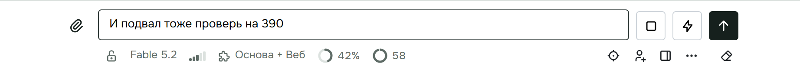
      <button class="hot top" data-i="clip" style="left:8.1%;top:8%;width:3.2%;height:44%" aria-label="Скрепка"></button>
      <button class="hot top" data-i="stop" style="left:79.4%;top:10%;width:3.9%;height:42%" aria-label="Прервать"></button>
      <button class="hot top" data-i="now" style="left:84%;top:10%;width:3.9%;height:42%" aria-label="Сейчас"></button>
      <button class="hot top" data-i="next" style="left:88.5%;top:10%;width:3.9%;height:42%" aria-label="Следующим"></button>
      <button class="hot" data-i="mode" style="left:12.9%;top:57%;width:2.2%;height:28%" aria-label="Режим"></button>
      <button class="hot" data-i="model" style="left:15.9%;top:57%;width:6.6%;height:28%" aria-label="Модель"></button>
      <button class="hot" data-i="effort" style="left:23.2%;top:57%;width:2.9%;height:28%" aria-label="Усилие"></button>
      <button class="hot" data-i="queue" style="left:26.8%;top:55%;width:18%;height:32%" aria-label="Очередь"></button>
      <button class="hot" data-i="pieces" style="left:45.7%;top:57%;width:11.6%;height:28%" aria-label="Кусочки"></button>
      <button class="hot" data-i="ctx" style="left:58.2%;top:57%;width:5.9%;height:28%" aria-label="Контекст"></button>
      <button class="hot" data-i="focus" style="left:75.5%;top:57%;width:2.4%;height:28%" aria-label="Фокус"></button>
      <button class="hot" data-i="wing" style="left:78.9%;top:57%;width:2.4%;height:28%" aria-label="Ведомый"></button>
      <button class="hot" data-i="panel" style="left:82.1%;top:57%;width:2.3%;height:28%" aria-label="Панель"></button>
      <button class="hot" data-i="more" style="left:85.3%;top:57%;width:2.3%;height:28%" aria-label="Ещё"></button>
      <button class="hot" data-i="clear" style="left:89.6%;top:57%;width:2.4%;height:28%" aria-label="Очистить"></button>
    </div>
  </div>
  <div class="say" id="say" aria-live="polite"><b>Ряд значков.</b> Слева — значения сессии, справа — действия над разговором. Слов «разрешено всё», «усилие модели» и почты аккаунта в ряду нет: они в подсказке и в меню значения.</div>
  <div class="grid">
    <div class="card tile"><b>9 → 0</b><span>наложений в ряду, ширина 1280 с панелью</span></div>
    <div class="card tile"><b>4 → 0</b><span>обрезанных значений на телефоне</span></div>
    <div class="card tile"><b>3 → 2</b><span>срочности отправки</span></div>
    <div class="card tile"><b>40 → 66 px</b><span>высота ряда на телефоне: действия — второй строкой</span></div>
  </div>
  <div class="shots">
    <figure>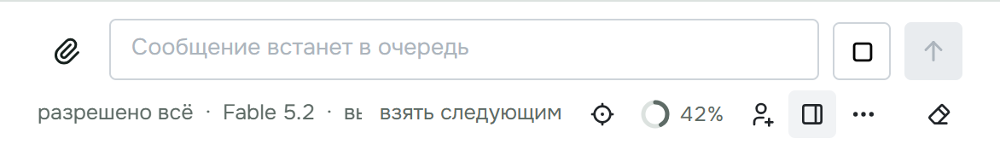<figcaption>Сейчас, 1280 с панелью: после модели всё обрезано</figcaption></figure>
    <figure>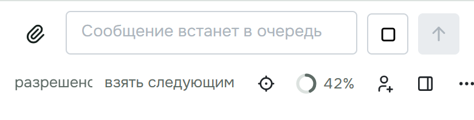<figcaption>Сейчас, телефон: от значений осталось одно слово</figcaption></figure>
  </div>
</section>

<section id="b-send" data-block>
  <h2>Две срочности, две кнопки</h2>
  <div class="card dia">
    <svg viewBox="0 0 960 250" role="img" aria-label="Ход сессии из шагов. Сообщение «сейчас» прерывает идущий шаг и берётся сразу; сообщение «следующим» берётся после идущего шага">
      <text x="20" y="28" class="s">ход сессии</text>
      <g class="n" data-i="t-step1"><rect x="20" y="130" width="170" height="54" rx="10"/><text x="105" y="162" text-anchor="middle">шаг: читает файл</text></g>
      <g class="n run" data-i="t-step2"><rect x="210" y="130" width="250" height="54" rx="10"/><text x="335" y="155" text-anchor="middle">шаг: правит файл</text><text x="335" y="173" text-anchor="middle" class="s">идёт сейчас</text></g>
      <g class="n" data-i="t-step3"><rect x="480" y="130" width="170" height="54" rx="10"/><text x="565" y="162" text-anchor="middle">шаг: тесты</text></g>
      <g class="n" data-i="t-end"><rect x="670" y="130" width="130" height="54" rx="10"/><text x="735" y="162" text-anchor="middle">итог хода</text></g>
      <g class="a"><line x1="190" y1="157" x2="204" y2="157"/><line x1="460" y1="157" x2="474" y2="157"/><line x1="650" y1="157" x2="664" y2="157"/></g>
      <polygon class="head" points="210,157 202,152 202,162"/><polygon class="head" points="480,157 472,152 472,162"/><polygon class="head" points="670,157 662,152 662,162"/>
      <g class="a now" data-i="t-now"><path d="M300 60 L300 118"/><text x="300" y="34" text-anchor="middle">⚡ сейчас</text><text x="300" y="52" text-anchor="middle" class="s">прерывает ход</text></g>
      <polygon class="head now" points="300,128 294,116 306,116"/>
      <g class="a next" data-i="t-next"><path d="M470 60 L470 118"/><text x="470" y="34" text-anchor="middle">↑ следующим</text><text x="470" y="52" text-anchor="middle" class="s">после идущего шага</text></g>
      <polygon class="head next" points="470,128 464,116 476,116"/>
      <text x="20" y="226" class="s">Третьей срочности — «после конца хода» — нет: сообщение ждало слишком долго.</text>
    </svg>
  </div>
  <div class="say" id="say2" aria-live="polite"><b>Пока идёт ход,</b> кнопок отправки две. Enter и стрелка — «следующим». Молния — «сейчас». Меню выбора срочности в ряду нет.</div>
  <figure class="crop feed">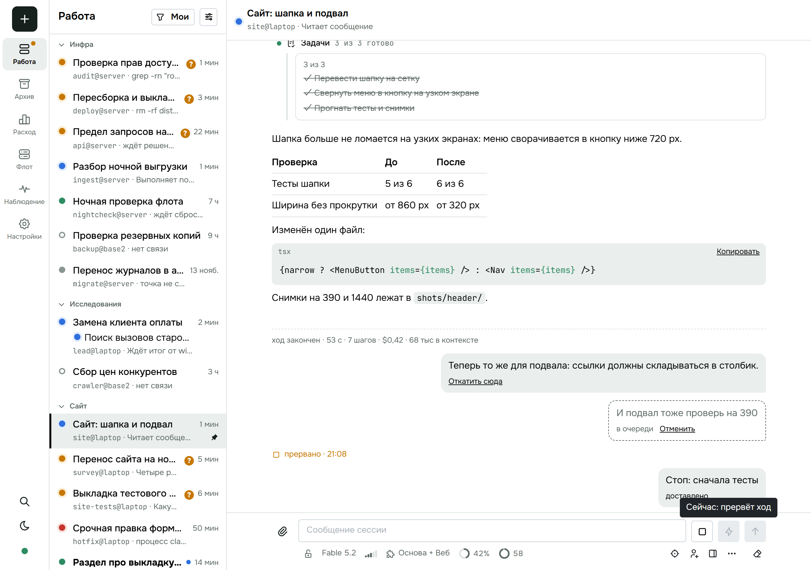<figcaption>Enter — сообщение «в очереди», его можно отменить; молния — ход прерван, сообщение доставлено</figcaption></figure>
  <div class="strip">
    <figure class="scroll">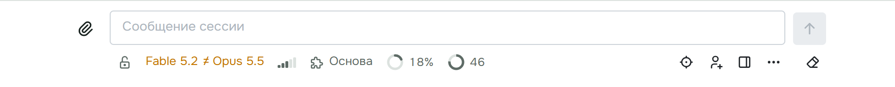<figcaption>Сессия свободна — одна кнопка отправки</figcaption></figure>
  </div>
</section>

<section id="b-panel" data-block>
  <h2>Панель справа — по кнопке</h2>
  <div class="shots">
    <figure>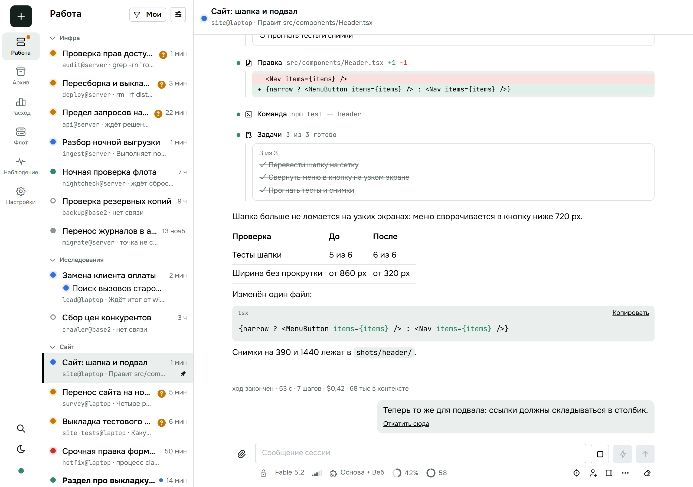<figcaption>Страница открыта: панели нет, лента шире на 336 px</figcaption></figure>
    <figure>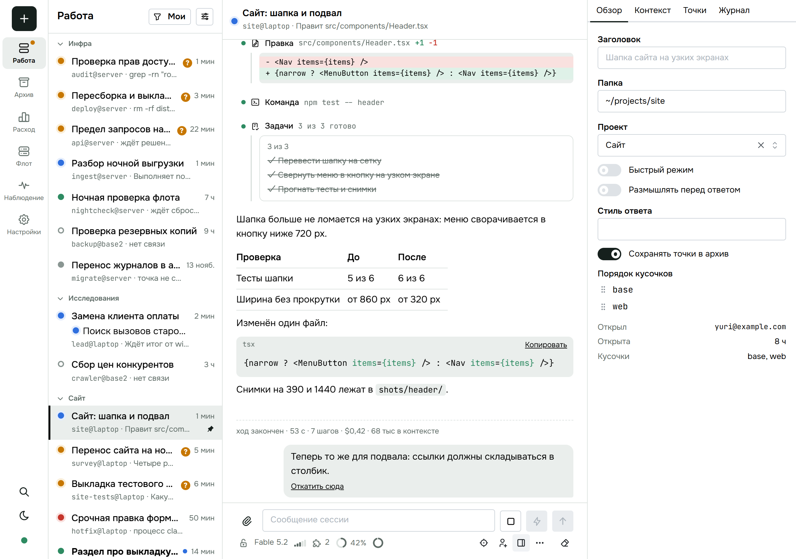<figcaption>Кнопка в ряду или клавиша I — панель открыта; ещё раз — закрыта</figcaption></figure>
  </div>
</section>

<section id="b-widths" data-block>
  <h2>Три ширины — ничего не обрезано</h2>
  <div class="shots two">
    <figure>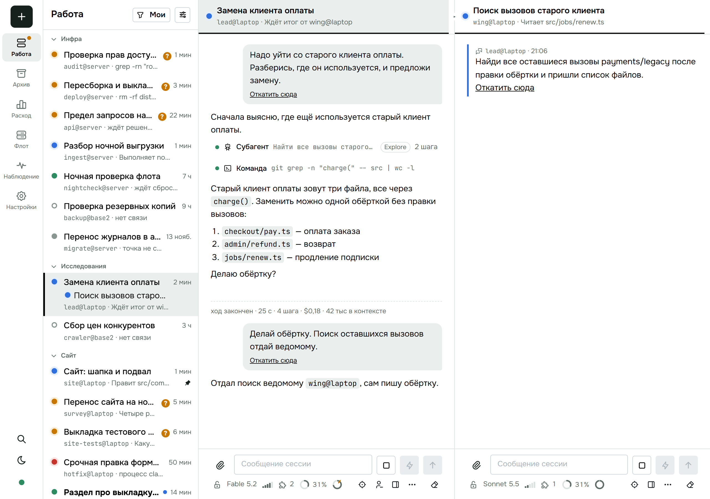<figcaption>Пара рядом, колонка 417 px: очередь без имени и срока, кусочки числом, действия — второй строкой</figcaption></figure>
    <figure class="ph">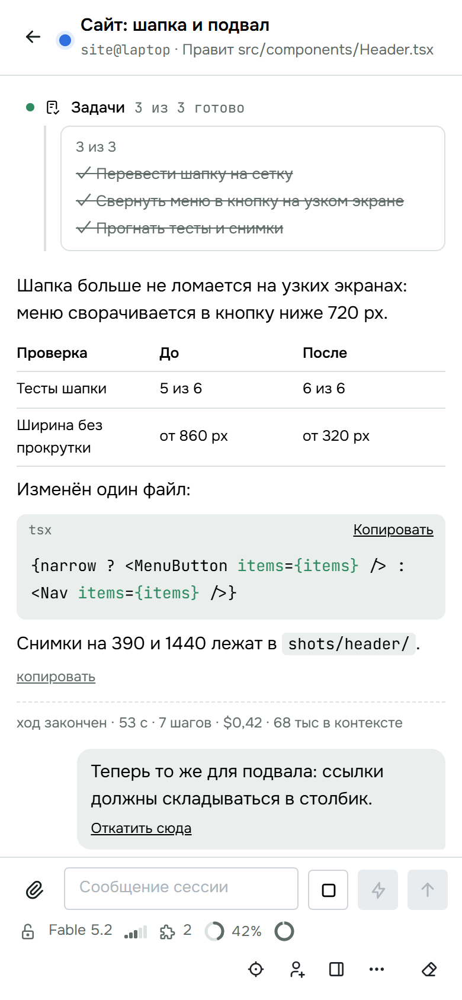<figcaption>Телефон, 366 px: тот же краткий вид</figcaption></figure>
  </div>
</section>

<section id="b-states" data-block>
  <h2>Состояния и меню</h2>
  <div class="strip">
    <figure class="scroll">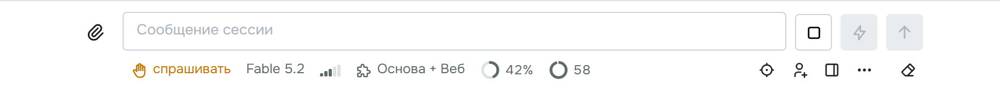<figcaption>Режим не «разрешено всё» — значок цветом и слово; обычный режим — один серый замок</figcaption></figure>
  </div>
  <div class="shots">
    <figure class="crop">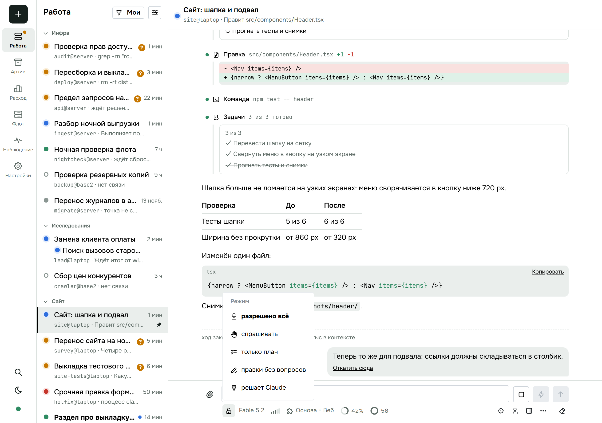<figcaption>Меню режима</figcaption></figure>
    <figure class="crop">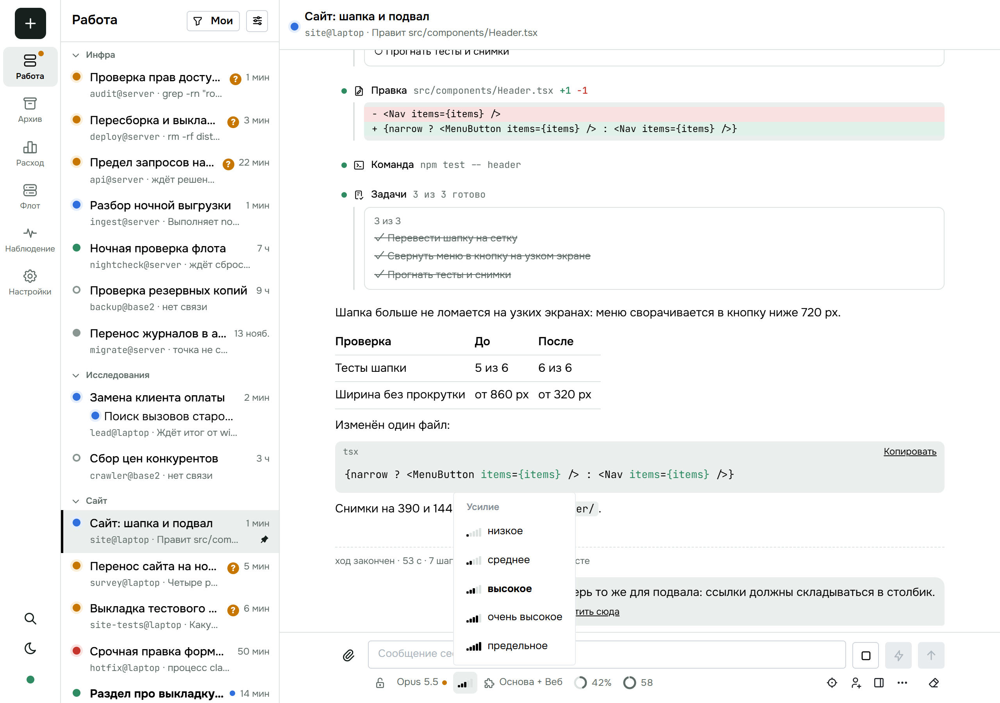<figcaption>Меню усилия</figcaption></figure>
    <figure class="crop chg" data-chg="impl-model-menu">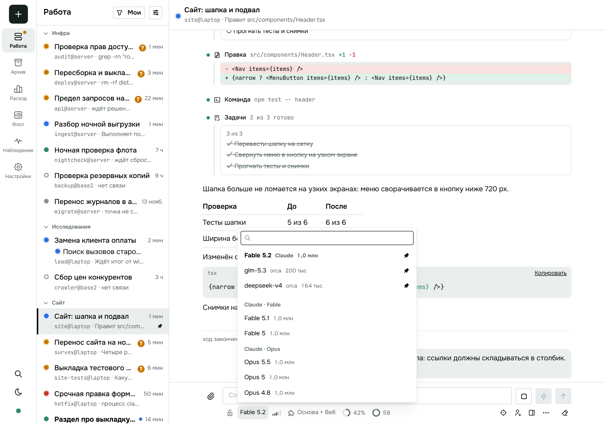<figcaption>Список моделей; аккаунта в ряду нет — его выбирает машина</figcaption></figure>
  </div>
</section>

<section id="b-etalons" data-block>
  <h2>Эталоны</h2>
  <div class="card">
    <div class="et"><div class="in">Идёт ход. Текст, Enter<small>чьё: слово пользователя</small></div><div class="ar">→</div><div class="out">Запрос «сообщение» без срочности; сообщение стоит в очереди</div></div>
    <div class="et"><div class="in">Идёт ход. Текст, молния<small>чьё: слово пользователя</small></div><div class="ar">→</div><div class="out">Запрос «сообщение» со срочностью <code>now</code>; ход прерван, сообщение взято</div></div>
    <div class="et chg" data-chg="et-queued"><div class="in">Идёт ход. Сообщение отправлено стрелкой и ждёт в ленте<small>чьё: слово пользователя — «слишком долго держит»</small></div><div class="ar">→</div><div class="out">Пометка «в очереди» и «Отменить»; слов «после хода» в пометке нет</div></div>
    <div class="et"><div class="in">Ряд в колонке 366, 417 и 736 px<small>чьё: слово пользователя — «перекрывает друг друга»</small></div><div class="ar">→</div><div class="out">Обрезанных значений 0, наложений 0</div></div>
    <div class="et"><div class="in">Разговор открыт на широком экране<small>чьё: слово пользователя — «не держать включённой»</small></div><div class="ar">→</div><div class="out">Панели справа нет; кнопка или I — есть; ещё раз — нет</div></div>
    <div class="et"><div class="in">Сессия свободна<small>чьё: код</small></div><div class="ar">→</div><div class="out">Кнопка отправки одна, молнии нет</div></div>
  </div>
</section>

<section id="b-forks" data-block>
  <h2>Развилка</h2>
  <div class="fork">
    <div class="opt rec"><b>Убрать настройку «Поля под вводом» — рекомендую</b><span>Все значения теперь помещаются. Машина уже стоит в позывном в шапке, владелец — в панели. Минус вложенное меню и одна настройка устройства. Не скажете иначе — убираю.</span></div>
    <div class="opt"><b>Оставить настройку</b><span>В меню «ещё» остаётся вложенный список галочек; «Машина» и «Владелец» по выбору встают в ряд словами.</span></div>
  </div>
</section>

<section id="b-gate" data-block>
  <h2>Гейт</h2>
  <div class="card gate">Гейт: дубликаты ответственности 0 → 0 · состояния 0 → 0 · <span class="chg" data-chg="gate-counts">логики 2 → 0 · смысла 4 → 0 · других 3 → 0</span> · лишние коммуникации 0 → 0 · циклы 0 → 0
Числа: значения срочности в запросе «сообщение» 3 → 2 · <span class="chg" data-chg="gate-numbers">объявлений набора срочностей 4 → 1 · мест, где на телефоне меняют значения сессии, 2 → 1</span> · состояние выбора срочности на странице 1 → 0 · настройка «Поля под вводом» 1 → 0 · значений ряда словами 6 → 3 · модули, кадры, каналы, секреты — без изменений
Работа: большая — меняет запрос «сообщение»: срочностей 3 → 2
Сделано:
  1. Less is More · запрос «сообщение» · срочность «после конца хода» убрана из договора, Host и страницы · выигрыш: значений 3 → 2
  2. Дубликат смысла · «встанет в очередь» стояло в подписи поля, в меню «взять следующим» и на кнопке · осталась кнопка · выигрыш: 3 места → 1
  3. Дубликат смысла · машина в ряду повторяла позывной в шапке · убрана вместе с настройкой полей (развилка) · выигрыш: 2 места → 1
  4. Другой дубликат · «Прервать» была двумя кнопками для двух ширин · одна кнопка-значок · выигрыш: 2 → 1
  5. Удаление раньше добавления · панель справа · выключена, пока не открыли · выигрыш: лента шире на 336 px
<span class="chg" data-chg="gate-blind">  6. Другой дубликат · на телефоне модель, усилие, режим, очередь и кусочки менялись ещё и полями в листе панели, потому что ряд их обрезал; ряд теперь полный · поля из листа убраны, значения меняются в ряду · выигрыш: 2 места → 1, лист короче на 5 полей
  7. Дубликат смысла · ждущее сообщение в ленте подписано «уйдёт после хода», а кнопка обещает «после идущего шага» · пометка — «в очереди»; у стрелки одно имя — «Следующим» · выигрыш: 2 описания одного → 1
  8. Дубликат логики · набор срочностей объявлен четыре раза: в договоре, в ядре Host, в модуле разговора и на странице · объявление одно — в договоре, остальные берут его оттуда · выигрыш: 4 → 1
  9. Дубликат логики · «стоит ли сообщение в очереди» подделка флота для страницы решала иначе, чем Host · подделка отвечает как Host: сессия занята — сообщение в очереди, пока процесс его не взял · выигрыш: 2 правила → 1
  10. Другой дубликат · эталон «срочность later — отказ» повторял общий эталон «негодный ввод — отказ словом» и держал убранное слово в тестах · заменён эталоном пометки в ленте · выигрыш: 2 → 1</span>
Развилки пользователю:
  1. Настройка «Поля под вводом» · рекомендую: убрать · иначе: оставить вложенным меню · не скажете иначе — убираю
Не трогал как редакторское: подпись кнопки панели «Инспектор»</div>
</section>

<section id="b-order" data-block>
  <h2>Порядок реализации</h2>
  <ol class="steps">
    <li><div>Договор и Host: в запросе «сообщение» срочностей две; тесты Host с «после конца хода» переведены на «следующим»; <span class="chg" data-chg="step-one-owner">набор срочностей объявлен один раз — в договоре, ядро Host, модуль разговора и страница берут его оттуда.</span></div>
      <div class="done"><b>Готово:</b> <span class="chg" data-chg="step-one-done"><code>npm test</code> зелёный; поиск <code>"later"</code> в срочности по договору, Host, странице и их тестам — 0 строк; объявлений набора срочностей — 1.</span></div></li>
    <li><div>Страница: ряд значков, две кнопки отправки, панель выключена, настройка полей убрана; тесты страницы под новый ряд<span class="chg" data-chg="step-two-dups">; пометка ждущего сообщения — «в очереди»; на телефоне полей значений в листе панели нет; подделка флота отвечает про очередь как Host</span>.</div>
      <div class="done"><b>Готово:</b> тесты <code>web</code> зелёные; <code>node docs/designs/v2-chatbar/shots.mjs</code> — 34 из 34, обрезано 0, наложено 0 на 366, 417 и 736 px.</div></li>
    <li><div>Тестовый флот: выкладка, живой прогон разговора — Enter во время хода ставит в очередь, молния прерывает ход, панель закрыта после загрузки.</div>
      <div class="done"><b>Готово:</b> <code>node tools/fleet/live-talk.mjs</code> — все шаги зелёные, из них 3 новых.</div></li>
  </ol>
</section>
</main>

<script>
// пояснения частей: нажатие на часть снимка или диаграммы
(() => {
  const J = (o) => "<pre>" + JSON.stringify(o, null, 2).replace(/</g, "&lt;") + "</pre>";
  const SAY = {
    clip: ["Скрепка.", "Файл к сообщению. Без изменений."],
    stop: ["Прервать.", "Останавливает ход, ничего не отправляя. На всех ширинах — один значок."],
    now: ["Сейчас.", "Отправляет сообщение и прерывает ход: сессия берёт его сразу. Видна, только пока идёт ход." + J({ type: "message", to: "site@laptop", text: "Стоп: сначала тесты", priority: "now" })],
    next: ["Следующим.", "Enter или стрелка: сессия возьмёт сообщение после идущего шага. Свободная сессия берёт сразу." + J({ type: "message", to: "site@laptop", text: "И подвал тоже проверь на 390" })],
    mode: ["Режим.", "Обычный «разрешено всё» — серый замок без слова. Любой другой режим — значок цветом и слово: исключение заметно. Нажатие — меню из пяти режимов." + J({ type: "session.update", to: "site@laptop", patch: { mode: "ask" } })],
    model: ["Модель.", "Словом, как было. Нажатие — меню моделей."],
    effort: ["Усилие.", "Пять ступенек: сколько закрашено — такое усилие; ни одной — «как у модели». Слова «усилие модели» в ряду нет." + J({ type: "session.update", to: "site@laptop", patch: { effort: "max" } })],
    queue: ["Очередь аккаунтов.", "Имя очереди, два лимита аккаунта полосками с числами (неделя и Fable) и время до сброса. Почта аккаунта — в подсказке и в меню. В узкой колонке остаются только полоски с числами."],
    pieces: ["Кусочки.", "Значок и имена; в узкой колонке — значок и число. Нажатие открывает список кусочков."],
    ctx: ["Контекст.", "Кольцо занятости с числом стоит среди значений. Нажатие сжимает разговор, как раньше."],
    focus: ["Фокус.", "Только итоги ходов. Без изменений."],
    wing: ["Ведомый.", "Открыть или убрать ведомого. Без изменений."],
    panel: ["Панель сессии.", "Открывает панель справа: обзор, контекст, точки, журнал. После загрузки страницы панель закрыта." + ' <span class="chg" data-chg="say-panel-phone">На телефоне панель — лист; полей модели, усилия, режима, очереди и кусочков в нём нет: их меняют в ряду.</span>'],
    more: ["Ещё.", "Закрепить, выгрузить разговор, остановить, убрать сессию. Вложенного списка «Поля под вводом» нет (развилка)."],
    clear: ["Очистить разговор.", "Без изменений."],
    "t-step1": ["Прошедший шаг.", "Шаг — один вызов инструмента или один ответ модели внутри хода."],
    "t-step2": ["Идущий шаг.", "Пока он идёт, человек пишет сообщение и выбирает кнопку."],
    "t-step3": ["Следующий шаг.", "«Следующим» встаёт перед ним: сессия читает сообщение, как только идущий шаг кончился."],
    "t-end": ["Итог хода.", "Сообщение этого места не ждёт: срочности «после конца хода» нет."],
    "t-now": ["Сейчас.", "Ход прерывается, сообщение берётся сразу." + J({ type: "message", to: "site@laptop", text: "Стоп: сначала тесты", priority: "now" }) + '<div class="chg" data-chg="say-now-reply">Ответ той же формы, что у «следующим»: сообщение в очереди, пока процесс его не взял, — здесь это мгновение.' + J({ type: "reply", id: "7", ok: true, result: { queued: true, uuid: "9f2c…" } }) + "</div>"],
    "t-next": ["Следующим.", "Сообщение ждёт конца идущего шага; пока ждёт — видно в ленте, его можно снять." + ' <span class="chg" data-chg="say-next-note">Пометка в ленте — «в очереди», без «после хода».</span>' + J({ type: "message", to: "site@laptop", text: "И подвал тоже проверь на 390" }) + J({ type: "reply", id: "8", ok: true, result: { queued: true, uuid: "41ab…" } })],
  };
  const show = (el) => {
    const box = el.closest("section").querySelector(".say");
    const [title, body] = SAY[el.dataset.i];
    for (const x of el.closest("section").querySelectorAll("[data-i].on")) x.classList.remove("on");
    el.classList.add("on");
    box.innerHTML = "<b>" + title + "</b> " + body;
  };
  for (const el of document.querySelectorAll("[data-i]")) {
    el.addEventListener("click", () => show(el));
    if (el.tagName !== "BUTTON") { el.setAttribute("tabindex", "0"); el.setAttribute("role", "button"); el.addEventListener("keydown", (e) => e.key === "Enter" && show(el)); }
  }
})();
</script>
<script>
// метки «прочитал»: клавиша A (латинская или русская) над блоком
(() => {
  const KEY = "v2-chatbar.read";
  let read = [];
  try { read = JSON.parse(localStorage.getItem(KEY) ?? "[]"); } catch {}
  let over = null;
  const draw = () => { for (const s of document.querySelectorAll("[data-block]")) s.classList.toggle("read", read.includes(s.id)); };
  for (const s of document.querySelectorAll("[data-block]")) s.addEventListener("mouseenter", () => (over = s));
  document.addEventListener("keydown", (e) => {
    if (!(e.code === "KeyA" || e.key === "a" || e.key === "A" || e.key === "ф" || e.key === "Ф") || e.ctrlKey || e.metaKey || e.altKey || !over) return;
    read = read.includes(over.id) ? read.filter((x) => x !== over.id) : [...read, over.id];
    try { localStorage.setItem(KEY, JSON.stringify(read)); } catch {}
    draw();
  });
  draw();
})();
</script>
